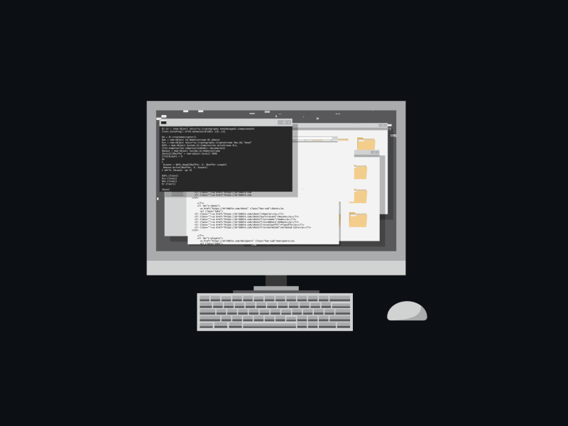

RÉALISATIONS
Projets et travaux réalisés
Cette page a pour objectif de regrouper progressivement les différents projets, travaux et réalisations développés durant ma formation BTS SIO option SLAM. Certaines rubriques seront enrichies au fil de l’année avec de nouveaux contenus, projets et expériences professionnelles.
Portfolio Web
Développement progressif de mon portfolio personnel destiné à présenter mon parcours et mes compétences.

Découverte UML
Espace dédié aux futurs travaux de modélisation et de conception UML.
Aucun fichier disponible pour le moment

MediaTek86
Développement d’une application Windows Forms en C# dans le cadre de l’atelier professionnel 2 du BTS SIO SLAM. Ce projet permet la gestion du personnel et des absences à l’aide d’une architecture MVC et d’une base de données MySQL.
Stage
Cette rubrique sera complétée lors de la réalisation de mon stage professionnel. Les dix semaines de stage prévues dans le BTS seront regroupées en deuxième année afin de construire une expérience plus complète et cohérente.
Aucun fichier disponible pour le moment
Cette video présente le fonctionnement de l'application MediaTek86, notamment la connexion, la gestion du personnel et la gestion des absences.
Voir la vidéo de présentation